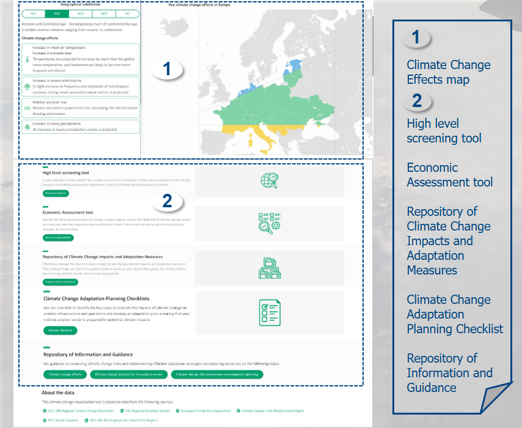

7 ClimAdapt
7.1 Intro

ClimAdapt is your portal to information on climate change impacts andadaptation measures for your organisation.
Find out how the climate will change around the European region.
Initiate a location and organisation-based pre-screening assessment tosupport the initiation of a full climate risk assessment.
Run a financial assessment and evaluate the potential costs of climateimpacts.
Use the checklist to plan a climate change risk assessment and adaptationstrategy.
Explore key climate impacts and adaptation measures by stakeholder,climate effect, or risk category.
Get guidance on assessing climate change risks and implementing effectiveadaptation strategies from various sources.
7.2 Functionalities
- Climate Change effects
- View Climate change effects per Climate zone or State
- High level Pre-Screening tool
- Run a climate change risk pre-screening assessment
- View the pre-screening assessment report summary
- Economic Assessment tool
- Plan for the financial implications of climate change
- View the economic assessment results
- Repository of Impacts and Adaptation Measures
- Search for potential climate impacts and targeted measures to reduce vulnerabilities
- Adaptation Planning Checklists
- Check the key steps for climate risk assessment and adaptation action
- Repository of Information and Guidance
- Get guidance on climate change risks and adaptation measures from various sources
- About the Data
- View ClimAdapt data sources